| 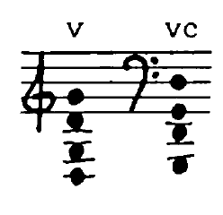 |
All pitches are notated in accordance with the standard fingering, with the string indicated in Roman numerals; where fingering diverges from the sounding result, the latter is indicated in standard tuning. In the smaller staff above, one can read the actual resultant pitches. The timbral difference between equivalent pitches, in part called forth through unconventional playing techniques, can only be realized if all strings are natural gut, of which only the lowest ones are wound. |
| = approximate pitch. The larger the x, the wider the prescribed range. | |
| = fingering (or point on the string) that diverges from the sounding result. | |
| = result which diverges from what's expected given the fingering. | |
| = touch the string lightly (like a harmonic). | |
| These symbols appear in a great variety of combinations along with others still to be named. For the purpose of unifying this notation system, artificial harmonics will always look as follows: |
| 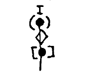 |
= string indication and resulting sound = lightly touched node = firm fingering |
| 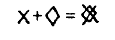 | = approximate pitch combined with harmonic pressure. From time to time, this will only serve to prevent the sympathetic vibration of open strings. |
| 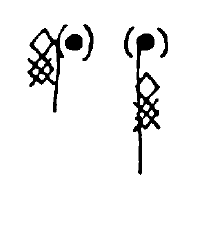 | = "fawsetts," a harmonic technique discovered by R. Fawsett which enables a rapid sequence (e.g., even scales) of harmonics: two harmonic-pressure fingerings result in the pitch an octave and a fifth above the upper finger's location. This can only be achieved through a continuous bow speed at the usual arco-position (about 1/6 of the string length between the upper finger and the bridge; the lower finger's position is irrelevant -- it only serves to prevent the creation of a self-contained vibrating system, and can remain in place while the upper finger's position changes). This technique was extended in the following manner: when the bow position moves toward the bridge, the next higher tones in the overtone series can be produced; when moving sul tasto, it's the lower tones in the series; if the result (•) is identical to the expressly notated finger position (), then the string is being bowed approxinately halfway between the finger and the bridge. If the result is the octave (2. overtone), then the bow location is 1/4 (sul tasto), for the twelfth (3. overtone) = 1/6 (ordinario), double-octave (4th overtone) = 1/8 (poco sul pont.) etc. The higher tones will naturally be progressively more difficult to find and (given a steady bow movement) maintain; that's why they are only seldom used (cf. 7th and 8th overtone in Vcl, part VI, m. 26). |
| = area to which a given fingering or bow placement applies. | |
| = harmonic-multiphonic (without upper limit), achieved through extreme sul ponticello or directly on (i.e., both before and behind) the bridge. | |
| 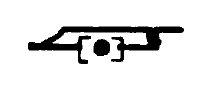 | = prescribed location of the bow; may be below the left hand. On the empty strings, bowing directly on the harmonic nodes results in multiphonics, which are subject to the influence of bow pressure and speed. |
| 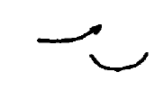 | = lift the bow gently to allow both the bowed string and the sympathetic resonances of hte open strings to ring out. |
| =heavy bow pressure (relative to the dynamic) and slower bow, than would be necessary for producing a real pitch (fingered note is imperceptible). | |
| 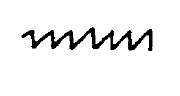 | = when combined with excess bow pressure, the string is pushed off-center by the bow; of its own accord, it snaps back and thus produces the pitch corresponding to the bow's position (i.e., as if the bow was 'fingering' the pitch.) |
| 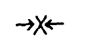 | = grasp the string between thumb and forefinger and lift it slightly. |
| 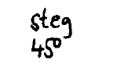 | =bowing directly on the bridge at 45° with great pressure results in a shrill squealing. Prevent the sympathetic resonance of the strings by lightly damping them. |
| 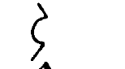 | = arco in the frame (body) of the instrument |
| = half-pressure (half-harmonic). On pizzicato the fundamental of the open string will be audible as well. | |
| 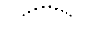 | = gradual transition to... |
| 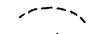 | = quasi legato |
| 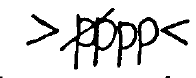 | = niente, dal or al niente |
| 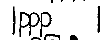 | = begin and end in the same dynamic (even stopping the bow abruptly) |
| 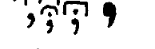 | = little caesuras (like a quick catching of one, two, or three breaths; large caesura (like a long drawing in of the breath). |
| = breath noise | |
| 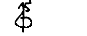 | = two octaves higher |
all accidentals apply only to a single note and are repeated even across tied notes; natural signs only appear occasionally for the sake of clarity.
| 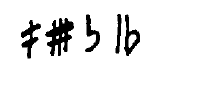 |
= raising or lowering of the |